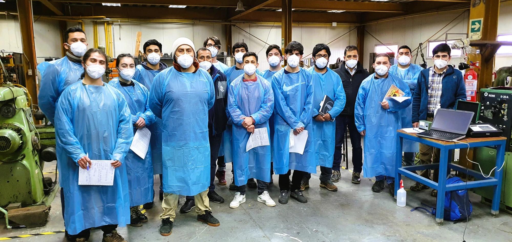
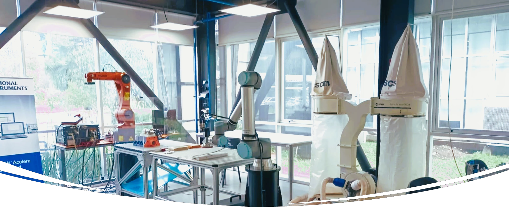

Fabián A. Iglesias Quilodrán
Mechanical Engineer
Master of Science in Engineering
University of La Frontera
Av. Francisco Salazar 01145
Temuco 4811230, Chile 🇨🇱
I am a Researcher at University of La Frontera (UFRO) and currently collaborate on research activities under the supervision of Prof. Dr. Ing. Eduardo Diez, Professor at the Department of Mechanical Engineering. Recently, I have been working on a research project that focuses on surface roughness analysis using computer vision algorithms.
My research interests lie in Automation, Robotics, and Artificial Intelligence applied to engineering. As a very curious person, I am always eager to learn more about new advances in science and technology, particularly those that can be applied to real-world engineering problems.
In mid-2018, I completed an internship in Germany with the Ping-DAAD program at Ruhr-Universität Bochum (RUB), where I took courses in renewable energy.
In addition to my studies and research work, I am a member of DIVCiencia, an organization that promotes scientific communication in Spanish. We organize scientific talks and coffees in the La Araucanía region. I am also the creator of podcasts about science at Punto Científico.
🎓 Education
MSc in Engineering StudentUniversity of La Frontera (2021 – 2023, Chile)
BSc in Mechanical Engineering
University of La Frontera (2015 – 2021, Chile)
Internship in Germany
Ruhr-Universität Bochum (07.2017 – 07.2018, Germany)
Ping-DAAD Program
👨🏫 Teaching
 Teaching how to measure roughness in the mechanical workshop, wearing masks due to the COVID-19 pandemic.
University of La Frontera
➤ Introduction to Industrial Computer Vision (Spring 2023 - Fall 2024)
University of La Frontera (Teaching Assistant)
➤ Research Methodology, taught by Professor Eduardo Diez (Fall 2024 - 2025)
➤ Production Automation, taught by Professor Pablo Sanhueza (Spring 2021 – Fall 2022)
➤ Production Automation, taught by Professor Eduardo Diez (Fall 2020 – Fall 2021) (Spring 2022)
➤ Manufacturing Processes I, taught by Professor Eduardo Diez (Fall 2019 – Spring 2022)
➤ Physics I, taught by Professor Mauricio Santibañez (Fall 2016)
📊 Research
 Mechatronics Lab | UFRO.
➤ Undergraduate Work: Surface Roughness Model in Robotic Sanding Process.
Research focused on modeling the behavior of roughness in robotic sanding process of radiata pine wood parts, within the framework of R&D project FONDEF IDeA I+D ID18I10042, under direction Dr. Eduardo Diez.
➤ Master's Thesis: Influence of the Operating Parameters on the Surface Quality of Wood Parts Processed by Robotic Sanding.
The focus of this work was on investigating the influence of operating parameters on the surface quality of MDF parts processed by robotic sanding. To evaluate the surface roughness, computer vision techniques and algorithms were used and developed. | Thesis Supervisor: Dr. Eduardo Diez.
RESEARCH PROJECTS
➤ [IT21i0069] Desarrollo y validación de una célula inteligente de lijado y pulido robotizado para entornos de manufactura avanzada.
Position: Project Engineer (2022 - 2025) | (dec 2022 - jun 2025) | Funded by FONDEF ANID.
➤ [VIU22P0027] RuGo: Solución tecnológica integral para la evaluación de la calidad superficial en productos de madera mediante algoritmos basados en imágenes.
Position: Project Director | (dec 2022 - feb 2024) | Funded by VIU ANID.
➤ Desarrollo de un sistema de visión para evaluar la calidad superficial de piezas de madera lijadas en entornos de fabricación inteligentes.
Position: Project Engineer | (jul 2022 - dec 2022) | Funded by I2030 MACROFACULTAD Project - CORFO.
➤ [ID18I10042] Desarrollo de una herramienta terminal para operaciones de lijado robotizado inteligente con aplicación a la manufactura de productos de madera de alto valor agregado.
Position: Student (2020 - 2021) | (2018 - 2021) | Funded by FONDEF ANID.
📜 Publications
[Reseach Articles]
➤ Iglesias, F., Aguilera, A., Rolleri, A., Wentzel, M., Diez, E.: Impact of surface roughness on the wettability of MDF processed by robotic sanding. European Journal of Wood and Wood Products. (2025). 🔗 https://doi.org/10.1007/s00107-025-02231-1
➤ Iglesias, F., Aguilera, A., Padilla, A., Vizán, A., Diez, E.: Application of computer vision techniques to estimate surface roughness on wood-based sanded workpieces. Measurement. (2023). 🔗 https://doi.org/10.1016/j.measurement.2023.113917
[Conference Articles]
➤ Iglesias, F., Aguilera, A., Padilla, A., Madaf, M., Diez, E.: Optical Evaluation of Surface Roughness in Wood Parts Processed by Robotic Sanding. Proceedings of the XV Ibero-American Congress of Mechanical Engineering. IACME 2022. Springer, Cham. (2023). 🔗 https://doi.org/10.1007/978-3-031-38563-6_52
➤ Iglesias Quilodrán, F., Aguilera León, A., Padilla Bernedo, A., Madaf Poblete, M., Diez Cifuentes, E.: Evaluación óptica de la rugosidad superficial en piezas de madera procesadas mediante lijado robotizado. XV Congreso Iberoamericano de Ingeniería Mecánica. Universidad Politécnica de Madrid. (2022). 🔗 https://doi.org/10.5944/bicim2022.119
📺 Media
2023 – Innovación en la manufactura de productos de madera: Colaboración entre científicos de la UFRO y Woodnic (Madera21)

2021 – UFRO | Tecnologías para manufacturar productos de madera de alto valor (24 HORAS)